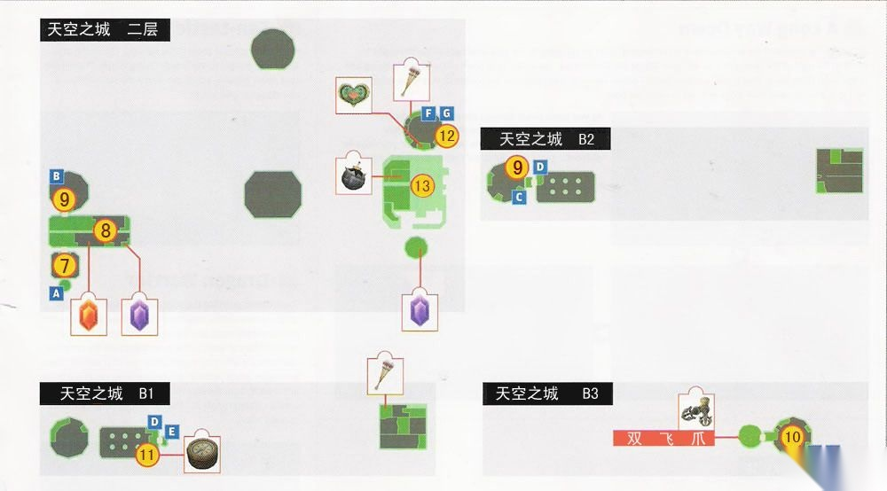

阅读建议
英文版专题已经写成完整原创分析，重点解释本作为什么能在迷宫顺序不断变化的同时，仍保持稳定而有推进感的主线节奏。
中文页先保留简版摘要，后续再结合中文章节页的清理情况决定是否补成完整版。

英文版专题已经写成完整原创分析，重点解释本作为什么能在迷宫顺序不断变化的同时，仍保持稳定而有推进感的主线节奏。
中文页先保留简版摘要，后续再结合中文章节页的清理情况决定是否补成完整版。
这篇专题的重点，不是单独夸某个迷宫有多好，而是解释整套迷宫顺序为什么让流程一直有增长感。前三个迷宫主要建立“道具、环境、Boss 回报”这套语法；中段的沙漠、雪峰与时之神殿则开始改变主线真正关心的问题；后段的天空城、暮影宫殿与海拉鲁城堡，则把前面所有积累收束成终局压力。
另一层关键在于道具顺序。Spinner、Ball and Chain、Dominion Rod、Double Clawshots 这些东西并不只是解当前迷宫，它们还会反过来重写旧区域的可读性，让附录中的回头清理与支线补完显得更“顺理成章”。
如果你现在更想看完整论述，建议直接进入英文正式版；中文长文等中文页整体质量稳定后再补。